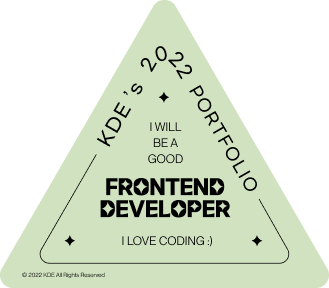
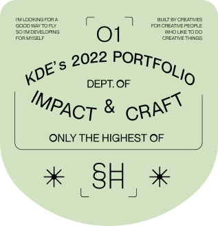
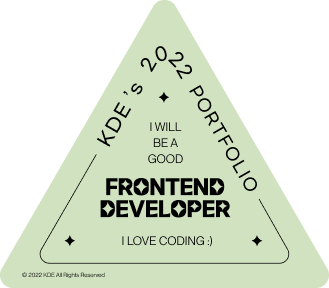
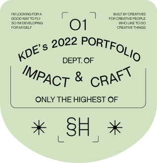

KDE’s PORTFOLIO
 



all site works

PHP
PHP Team Project
기후위기에 대한 심각성을 알리고 기후
행동을 장려하는 웹 사이트 ‘지구ON’을
팀 프로젝트로 제작하였습니다.
Standard
Web Standard Site
Alt 속성과 IR 효과 등을 활용하여 시각
장애인을 포함한 누구나 웹서핑을 할 수
있도록 웹 표준을 준수한 사이트입니다.
Reference
Coding Reference Book
코딩을 처음 배웠던 시절 저에게 큰 도움이
되었던 온라인 상의 레퍼런스 북입니다.
HTML과 CSS, JS의 기초를 다뤘습니다.
HTML 태그 총 134개, CSS 속성 총 382개, 그리고 자바스크립트의 수많은 공식들…,
어찌나 공부해야 할 것이 많은지, 정리해두지 않으면 시간이 아무리 지나도 저의 코딩
울렁증은 도저히 극복할 수 없을 것 같았어요. 코딩 초보시절 직접 공부하고 정리하며
만든 레퍼런스 북은 더 이상 코딩이 두렵지 않은 지금의 저를 만들어주었습니다.
React/Vue
React/Vue Site
React와 Vue로 각종 정보들을 API로 가져오는 웹 사이트를 만들어 보았습니다.
YouTube의 인기 영상들을 불러오고, 최근 개봉한 영화 정보를 불러오고, Unsplash에서
새로운 이미지들을 불러오는 등 다양하고 유용한 기능들을 제공합니다. 동일한 내용의
사이트를 React와 Vue라는 비슷하면서도 서로 엄연히 다른 언어로 코딩해보는 과정은
마크업만 해왔던 제게 낯선 이 두 언어를 익힐 수 있었던 귀중한 시간이었습니다.
all script works
Game
Game Effect
첫 페이지는 컴퓨터 바탕화면 GUI처럼 디자인하였고, 바탕화면에 배치된 각각의
아이콘을 클릭하여 음악을 듣거나 게임을 플레이 할 수 있도록 코딩하였습니다.
게임에는 3가지가 있으며 테트리스 게임, CSS 속성을 검색하여 점수를 얻는 서치
게임, 그리고 재미있는 카드 게임이 준비되어 있습니다.
Parallax
Parallax Effect
시차를 두고 부드러운 애니메이션 움직임을 주는 패럴럭스 이펙트입니다.
특정 섹션 이동 시의 움직임을 스무스하게 해주었고, 콘텐츠(내용물)의 제목과
본문, 이미지가 각각 다른 시차를 두고 독특한 방식으로 등장하여 웹서핑을 하면서
생동감을 느낄 수 있도록 총 7가지의 유형으로 열심히 만들어보았습니다.
Slider
Slider Effect
슬라이드 이펙트는 기본 트랜지션 효과와 좌측으로 이동하는 유형, 연속적으로
이동하는 유형, 좌우 이동 버튼이 있는 유형, 버튼과 닷메뉴가 있는 유형 등 총
7가지의 유형을 만들어보았습니다. 처음에는 많이 어려웠지만 차근차근 스크립트
에 대한 설명을 적어가며 공부하면서 열심히 만들었습니다.
Mouse
Mouse Effect
마우스 커서를 올려놓는 요소에 따라 커서의 모양을 다르게 하거나,
마우스 커서의 움직임을 조금 더 부드럽고 스무스하게 만들고, 마우스 커서의 동작을
독특한 애니메이션으로 생동감을 주는 등의 다양한 마우스 이펙트를 자바스크립트와
GSAP을 통해 만들어 보았습니다.
all works details
LIST OF MY WORK
국비 코딩학원에서 수강하던 시절 부지런히 만든 작품들입니다.
6개월이 넘는 기간동안 열심히 공부하며 만든 저의 보물같은 존재들이며,
코딩 초보시절 ‘코딩 울렁증’을 앓고 있던 제게 이 작품들은 뿌듯함과
성취감을 안겨주고 두려워했던 코딩과 친해질 수 있는 계기를 만들어주었습니다.
열심히 만든 만큼 꼼꼼히 봐주셨으면 좋겠습니다. 감사합니다!
Standard Web Site
자세히 보기
국비 코딩학원에서 수강하던 시절 부지런히 만든 작품들입니다. 6개월이 넘는 기간동안 열심히 공부하며 만든 저의 보물같은 존재들이며, 코딩 초보시절 ‘코딩 울렁증’을 앓고 있던 제게 이 작품들은 뿌듯함과 성취감을 안겨주고 두려워했던 코딩과 친해질 수 있는 계기를 만들어주었습니다. 열심히 만든 만큼 꼼꼼히 봐주셨으면 좋겠습니다. 감사합니다!
국비 코딩학원에서 수강하던 시절 부지런히 만든 작품들입니다. 6개월이 넘는 기간동안 열심히 공부하며 만든 저의 보물같은 존재들이며, 코딩 초보시절 ‘코딩 울렁증’을 앓고 있던 제게 이 작품들은 뿌듯함과 성취감을 안겨주고 두려워했던 코딩과 친해질 수 있는 계기를 만들어주었습니다. 열심히 만든 만큼 꼼꼼히 봐주셨으면 좋겠습니다. 감사합니다!
Standard Web Site
자세히 보기
국비 코딩학원에서 수강하던 시절 부지런히 만든 작품들입니다. 6개월이 넘는 기간동안 열심히 공부하며 만든 저의 보물같은 존재들이며, 코딩 초보시절 ‘코딩 울렁증’을 앓고 있던 제게 이 작품들은 뿌듯함과 성취감을 안겨주고 두려워했던 코딩과 친해질 수 있는 계기를 만들어주었습니다. 열심히 만든 만큼 꼼꼼히 봐주셨으면 좋겠습니다. 감사합니다!
국비 코딩학원에서 수강하던 시절 부지런히 만든 작품들입니다. 6개월이 넘는 기간동안 열심히 공부하며 만든 저의 보물같은 존재들이며, 코딩 초보시절 ‘코딩 울렁증’을 앓고 있던 제게 이 작품들은 뿌듯함과 성취감을 안겨주고 두려워했던 코딩과 친해질 수 있는 계기를 만들어주었습니다. 열심히 만든 만큼 꼼꼼히 봐주셨으면 좋겠습니다. 감사합니다!
Standard Web Site
자세히 보기
국비 코딩학원에서 수강하던 시절 부지런히 만든 작품들입니다. 6개월이 넘는 기간동안 열심히 공부하며 만든 저의 보물같은 존재들이며, 코딩 초보시절 ‘코딩 울렁증’을 앓고 있던 제게 이 작품들은 뿌듯함과 성취감을 안겨주고 두려워했던 코딩과 친해질 수 있는 계기를 만들어주었습니다. 열심히 만든 만큼 꼼꼼히 봐주셨으면 좋겠습니다. 감사합니다!
국비 코딩학원에서 수강하던 시절 부지런히 만든 작품들입니다. 6개월이 넘는 기간동안 열심히 공부하며 만든 저의 보물같은 존재들이며, 코딩 초보시절 ‘코딩 울렁증’을 앓고 있던 제게 이 작품들은 뿌듯함과 성취감을 안겨주고 두려워했던 코딩과 친해질 수 있는 계기를 만들어주었습니다. 열심히 만든 만큼 꼼꼼히 봐주셨으면 좋겠습니다. 감사합니다!
Standard Web Site
자세히 보기
국비 코딩학원에서 수강하던 시절 부지런히 만든 작품들입니다. 6개월이 넘는 기간동안 열심히 공부하며 만든 저의 보물같은 존재들이며, 코딩 초보시절 ‘코딩 울렁증’을 앓고 있던 제게 이 작품들은 뿌듯함과 성취감을 안겨주고 두려워했던 코딩과 친해질 수 있는 계기를 만들어주었습니다. 열심히 만든 만큼 꼼꼼히 봐주셨으면 좋겠습니다. 감사합니다!
국비 코딩학원에서 수강하던 시절 부지런히 만든 작품들입니다. 6개월이 넘는 기간동안 열심히 공부하며 만든 저의 보물같은 존재들이며, 코딩 초보시절 ‘코딩 울렁증’을 앓고 있던 제게 이 작품들은 뿌듯함과 성취감을 안겨주고 두려워했던 코딩과 친해질 수 있는 계기를 만들어주었습니다. 열심히 만든 만큼 꼼꼼히 봐주셨으면 좋겠습니다. 감사합니다!
Standard Web Site
자세히 보기
국비 코딩학원에서 수강하던 시절 부지런히 만든 작품들입니다. 6개월이 넘는 기간동안 열심히 공부하며 만든 저의 보물같은 존재들이며, 코딩 초보시절 ‘코딩 울렁증’을 앓고 있던 제게 이 작품들은 뿌듯함과 성취감을 안겨주고 두려워했던 코딩과 친해질 수 있는 계기를 만들어주었습니다. 열심히 만든 만큼 꼼꼼히 봐주셨으면 좋겠습니다. 감사합니다!
국비 코딩학원에서 수강하던 시절 부지런히 만든 작품들입니다. 6개월이 넘는 기간동안 열심히 공부하며 만든 저의 보물같은 존재들이며, 코딩 초보시절 ‘코딩 울렁증’을 앓고 있던 제게 이 작품들은 뿌듯함과 성취감을 안겨주고 두려워했던 코딩과 친해질 수 있는 계기를 만들어주었습니다. 열심히 만든 만큼 꼼꼼히 봐주셨으면 좋겠습니다. 감사합니다!
Standard Web Site
자세히 보기
국비 코딩학원에서 수강하던 시절 부지런히 만든 작품들입니다. 6개월이 넘는 기간동안 열심히 공부하며 만든 저의 보물같은 존재들이며, 코딩 초보시절 ‘코딩 울렁증’을 앓고 있던 제게 이 작품들은 뿌듯함과 성취감을 안겨주고 두려워했던 코딩과 친해질 수 있는 계기를 만들어주었습니다. 열심히 만든 만큼 꼼꼼히 봐주셨으면 좋겠습니다. 감사합니다!
국비 코딩학원에서 수강하던 시절 부지런히 만든 작품들입니다. 6개월이 넘는 기간동안 열심히 공부하며 만든 저의 보물같은 존재들이며, 코딩 초보시절 ‘코딩 울렁증’을 앓고 있던 제게 이 작품들은 뿌듯함과 성취감을 안겨주고 두려워했던 코딩과 친해질 수 있는 계기를 만들어주었습니다. 열심히 만든 만큼 꼼꼼히 봐주셨으면 좋겠습니다. 감사합니다!
Standard Web Site
자세히 보기
국비 코딩학원에서 수강하던 시절 부지런히 만든 작품들입니다. 6개월이 넘는 기간동안 열심히 공부하며 만든 저의 보물같은 존재들이며, 코딩 초보시절 ‘코딩 울렁증’을 앓고 있던 제게 이 작품들은 뿌듯함과 성취감을 안겨주고 두려워했던 코딩과 친해질 수 있는 계기를 만들어주었습니다. 열심히 만든 만큼 꼼꼼히 봐주셨으면 좋겠습니다. 감사합니다!
국비 코딩학원에서 수강하던 시절 부지런히 만든 작품들입니다. 6개월이 넘는 기간동안 열심히 공부하며 만든 저의 보물같은 존재들이며, 코딩 초보시절 ‘코딩 울렁증’을 앓고 있던 제게 이 작품들은 뿌듯함과 성취감을 안겨주고 두려워했던 코딩과 친해질 수 있는 계기를 만들어주었습니다. 열심히 만든 만큼 꼼꼼히 봐주셨으면 좋겠습니다. 감사합니다!
Standard Web Site
자세히 보기
국비 코딩학원에서 수강하던 시절 부지런히 만든 작품들입니다. 6개월이 넘는 기간동안 열심히 공부하며 만든 저의 보물같은 존재들이며, 코딩 초보시절 ‘코딩 울렁증’을 앓고 있던 제게 이 작품들은 뿌듯함과 성취감을 안겨주고 두려워했던 코딩과 친해질 수 있는 계기를 만들어주었습니다. 열심히 만든 만큼 꼼꼼히 봐주셨으면 좋겠습니다. 감사합니다!
국비 코딩학원에서 수강하던 시절 부지런히 만든 작품들입니다. 6개월이 넘는 기간동안 열심히 공부하며 만든 저의 보물같은 존재들이며, 코딩 초보시절 ‘코딩 울렁증’을 앓고 있던 제게 이 작품들은 뿌듯함과 성취감을 안겨주고 두려워했던 코딩과 친해질 수 있는 계기를 만들어주었습니다. 열심히 만든 만큼 꼼꼼히 봐주셨으면 좋겠습니다. 감사합니다!
Standard Web Site
자세히 보기
국비 코딩학원에서 수강하던 시절 부지런히 만든 작품들입니다. 6개월이 넘는 기간동안 열심히 공부하며 만든 저의 보물같은 존재들이며, 코딩 초보시절 ‘코딩 울렁증’을 앓고 있던 제게 이 작품들은 뿌듯함과 성취감을 안겨주고 두려워했던 코딩과 친해질 수 있는 계기를 만들어주었습니다. 열심히 만든 만큼 꼼꼼히 봐주셨으면 좋겠습니다. 감사합니다!
국비 코딩학원에서 수강하던 시절 부지런히 만든 작품들입니다. 6개월이 넘는 기간동안 열심히 공부하며 만든 저의 보물같은 존재들이며, 코딩 초보시절 ‘코딩 울렁증’을 앓고 있던 제게 이 작품들은 뿌듯함과 성취감을 안겨주고 두려워했던 코딩과 친해질 수 있는 계기를 만들어주었습니다. 열심히 만든 만큼 꼼꼼히 봐주셨으면 좋겠습니다. 감사합니다!
Standard Web Site
자세히 보기
국비 코딩학원에서 수강하던 시절 부지런히 만든 작품들입니다. 6개월이 넘는 기간동안 열심히 공부하며 만든 저의 보물같은 존재들이며, 코딩 초보시절 ‘코딩 울렁증’을 앓고 있던 제게 이 작품들은 뿌듯함과 성취감을 안겨주고 두려워했던 코딩과 친해질 수 있는 계기를 만들어주었습니다. 열심히 만든 만큼 꼼꼼히 봐주셨으면 좋겠습니다. 감사합니다!
국비 코딩학원에서 수강하던 시절 부지런히 만든 작품들입니다. 6개월이 넘는 기간동안 열심히 공부하며 만든 저의 보물같은 존재들이며, 코딩 초보시절 ‘코딩 울렁증’을 앓고 있던 제게 이 작품들은 뿌듯함과 성취감을 안겨주고 두려워했던 코딩과 친해질 수 있는 계기를 만들어주었습니다. 열심히 만든 만큼 꼼꼼히 봐주셨으면 좋겠습니다. 감사합니다!